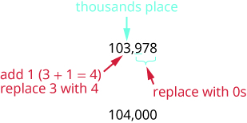

ماخذ: OpenStax Elementary Algebra 2e، باب Foundations، سبق «پورے عدداں دی جان پہچان»۔ ایتھے پہلے سیکشن دا باقی حصہ ترجمہ کیتا گیا اے؛ پورا سبق یا پوری کتاب نہیں۔
جدوں تُسیں چیک لکھدے او، تاں رقم ہندسیاں دے نال نال لفظاں وچ وی لکھدے او۔ کسے عدد نوں لفظاں وچ لکھن لئی، ہر پیریڈ دا عدد لکھو تے اوہدے پچھوں پیریڈ دا ناں لکھو، پر آخر والا s نہ لکھو۔ کھبے پاسے توں شروع کرو، جتھے پیریڈاں دی قدر سبھ توں وڈی ہوندی اے۔ اکائیاں والے پیریڈ دا ناں نہیں لکھیا جاندا۔ کوما پیریڈاں نوں وکھ کردے نیں، ایس لئی عدد وچ جتھے وی کوما ہووے، لفظاں وچ وی اوتھے کوما پاؤ (ویکھو شکل A10-002.1)۔ عدد 74,218,369 نوں چوہتر ملین، دو سو اٹھاراں ہزار، تِن سو اُنہتر لکھدے نیں۔
شکل A10-002.1
![ایس شکل وچ 74، 218 تے 369 عدد اک سطر وچ لکھے نیں تے کوما ایہناں نوں وکھ کردے نیں۔ ہر عدد دے تھلے اک مڑویں بریکٹ اے؛ 74 دے تھلے «ملیناں»، 218 دے تھلے «ہزاراں» تے 369 دے تھلے «اکائیاں» لکھیا اے۔ کھبے ول رُخ والا تیر ایہناں تِن لفظاں ول اشارہ کردا اے تے ایہناں نوں «پیریڈ» آکھدا اے۔ اک سطر تھلے عدد 74، سجّے ول رُخ والا تیر تے لفظ «چوہتر ملین» نیں، جیہناں دے پچھوں کوما اے۔ اگلی سطر وچ عدد 218، سجّے ول رُخ والا تیر تے لفظ «دو سو اٹھاراں ہزار» نیں، جیہناں دے پچھوں کوما اے۔ سبھ توں تھلّی سطر وچ عدد 369، سجّے ول رُخ والا تیر تے لفظ «تِن سو اُنہتر» نیں۔](../assets/a10/CNX_ElemAlg_Figure_01_01_004_new.jpg)
چھوٹی سکرین اُتے پوری شکل ویکھن لئی پاسے سرکاؤ، یا اصل شکل وکھری کھولو۔
حل کیتی مثال 2
عدد 8,165,432,098,710 نوں لفظاں وچ لکھو۔
حل
ہر پیریڈ دا عدد لفظاں وچ لکھو، تے اوہدے پچھوں پیریڈ دا ناں لکھو۔
![ایس شکل وچ عدد 8، 165، 432، 098 تے 710 اک سطر وچ لکھے نیں تے کوما ایہناں نوں وکھ کردے نیں۔ ہر عدد دے تھلے اک افقی بریکٹ اے؛ 8 دے تھلے «ٹریلیناں»، 165 دے تھلے «بلیناں»، 432 دے تھلے «ملیناں»، 098 دے تھلے «ہزاراں» تے 710 دے تھلے «اکائیاں» لکھیا اے۔ اک سطر تھلے عدد 8، سجّے ول رُخ والا تیر تے لفظ «اٹھ ٹریلین» نیں، جیہناں دے پچھوں کوما اے۔ اگلی سطر وچ عدد 165، سجّے ول رُخ والا تیر تے لفظ «اک سو پینہٹھ بلین» نیں، جیہناں دے پچھوں کوما اے۔ اگلی سطر وچ عدد 432، سجّے ول رُخ والا تیر تے لفظ «چار سو بتیہہ ملین» نیں، جیہناں دے پچھوں کوما اے۔ اگلی سطر وچ عدد 098، سجّے ول رُخ والا تیر تے لفظ «اٹھانوے ہزار» نیں، جیہناں دے پچھوں کوما اے۔ سبھ توں تھلّی سطر وچ عدد 710، سجّے ول رُخ والا تیر تے لفظ «ست سو دس» نیں۔](../assets/a10/CNX_ElemAlg_Figure_01_01_005_img_new.jpg)
چھوٹی سکرین اُتے پوری شکل ویکھن لئی پاسے سرکاؤ، یا اصل شکل وکھری کھولو۔
پیریڈاں نوں وکھ کرن لئی کوما پاؤ۔
سو، نوں اٹھ ٹریلین، اک سو پینہٹھ بلین، چار سو بتیہہ ملین، اٹھانوے ہزار، ست سو دس آکھدے نیں۔
ہُن اسیں ایس عمل نوں پُٹھے پاسے توں کراں گے: عدد دے لفظی ناں توں اوہدے ہندسے لکھاں گے۔ عدد نوں ہندسیاں وچ لکھن لئی، پہلے اوہ لفظ لبھدے آں جیہڑے پیریڈاں دی نشاندہی کردے نیں۔ لوڑ پین والے پیریڈاں لئی تِن تِن خالی تھاواں بنا لینا مددگار ہوندا اے؛ فیر ایہناں تھاواں وچ عدد بھرو تے پیریڈاں نوں کوما نال وکھ کرو۔
حل کیتی مثال 3
نَوں بلین، دو سو چھتالیہہ ملین، تہتر ہزار، اک سو اُنانوے نوں ہندسیاں نال اک پورے عدد دی صورت وچ لکھو۔
حل
پہلے پیریڈ توں چھُٹ باقی سارے پیریڈاں وچ تِن جگہاں ہونیاں چاہیدیاں نیں۔ ہر پیریڈ وچ لوڑ پین والیاں جگہاں وکھاؤن لئی تِن خالی تھاواں بناؤ۔ پیریڈاں نوں کوما نال وکھ کرو۔
فیر ہر پیریڈ وچ ہندسے لکھو۔

چھوٹی سکرین اُتے پوری شکل ویکھن لئی پاسے سرکاؤ، یا اصل شکل وکھری کھولو۔
پڑھ کے سناؤن والی وضاحت ساڈی ولوں درست کیتی گئی اے؛ ماخذ دا وفادار ترجمہ وکھرا محفوظ اے۔ ساڈی اصل وضاحت ویکھو۔
عدد 9,246,073,189 اے۔
2013 وچ امریکی مردم شماری دے ادارے نے نیویارک ریاست دی آبادی دا اندازہ 19,651,127 لایا سی۔ اسیں آکھ سکدے ساں کہ نیویارک دی آبادی لگ بھگ 20 ملین سی۔ کئی وار تہانوں عین قدر دی لوڑ نہیں ہوندی؛ لگ بھگ دا عدد کافی ہوندا اے۔
کسے عدد دی لگ بھگ قدر لبھن دے عمل نوں گول کرنا آکھدے نیں۔ جِنّی درستگی دی لوڑ ہووے، اوہدے مطابق عدد نوں جگہ دی کسے خاص قدر تک گول کیتا جاندا اے۔ ایہہ آکھن دا کہ نیویارک دی آبادی لگ بھگ 20 ملین اے، مطلب اے کہ اسیں ملیناں دی جگہ تک گول کیتا اے۔
حل کیتی مثال 4
پورے عدداں نوں گول کرن دا طریقہ
23,658 نوں نیڑے دے سینکڑے تک گول کرو۔
حل

چھوٹی سکرین اُتے پوری شکل ویکھن لئی پاسے سرکاؤ، یا اصل شکل وکھری کھولو۔
پڑھ کے سناؤن والی وضاحت ساڈی ولوں درست کیتی گئی اے؛ ماخذ دا وفادار ترجمہ وکھرا محفوظ اے۔ ساڈی اصل وضاحت ویکھو۔

چھوٹی سکرین اُتے پوری شکل ویکھن لئی پاسے سرکاؤ، یا اصل شکل وکھری کھولو۔

چھوٹی سکرین اُتے پوری شکل ویکھن لئی پاسے سرکاؤ، یا اصل شکل وکھری کھولو۔
پڑھ کے سناؤن والی وضاحت ساڈی ولوں درست کیتی گئی اے؛ ماخذ دا وفادار ترجمہ وکھرا محفوظ اے۔ ساڈی اصل وضاحت ویکھو۔

چھوٹی سکرین اُتے پوری شکل ویکھن لئی پاسے سرکاؤ، یا اصل شکل وکھری کھولو۔
پڑھ کے سناؤن والی وضاحت ساڈی ولوں درست کیتی گئی اے؛ ماخذ دا وفادار ترجمہ وکھرا محفوظ اے۔ ساڈی اصل وضاحت ویکھو۔
حل کیتی مثال 5
نوں ہِیٹھ دِتی ہر جگہ دی نیڑے دی قدر تک گول کرو:
- (a) سینکڑا
- (b) ہزار
- (c) دس ہزار
حل
پڑھ کے سناؤن والی وضاحت ساڈی ولوں درست کیتی گئی اے؛ ماخذ دا وفادار ترجمہ وکھرا محفوظ اے۔ ساڈی اصل وضاحت ویکھو · ساڈی اصل وضاحت ویکھو۔
| 103,978 وچ سینکڑیاں دی جگہ لبھو۔ |  چھوٹی سکرین اُتے پوری شکل ویکھن لئی پاسے سرکاؤ، یا اصل شکل وکھری کھولو۔ |
| سینکڑیاں دی جگہ توں سجّے پاسے والے ہندسے دے تھلے لکیر کھچو۔ |  چھوٹی سکرین اُتے پوری شکل ویکھن لئی پاسے سرکاؤ، یا اصل شکل وکھری کھولو۔ |
| کیوں جے 7، 5 توں وڈا یا اوہدے برابر اے، ایس لئی 9 وچ 1 جمع کرو۔ سینکڑیاں دی جگہ توں سجّے پاسے دے سارے ہندسیاں دی تھاں صفر لکھو۔ |  چھوٹی سکرین اُتے پوری شکل ویکھن لئی پاسے سرکاؤ، یا اصل شکل وکھری کھولو۔ پڑھ کے سناؤن والی وضاحت ساڈی ولوں درست کیتی گئی اے؛ ماخذ دا وفادار ترجمہ وکھرا محفوظ اے۔ ساڈی اصل وضاحت ویکھو۔ |
| سو، 103,978 نوں نیڑے دے سینکڑے تک گول کرن نال 104,000 ملدا اے۔ |
پڑھ کے سناؤن والی وضاحت ساڈی ولوں درست کیتی گئی اے؛ ماخذ دا وفادار ترجمہ وکھرا محفوظ اے۔ ساڈی اصل وضاحت ویکھو · ساڈی اصل وضاحت ویکھو۔
| ہزاراں دی جگہ لبھو تے ہزاراں دی جگہ توں سجّے پاسے والے ہندسے دے تھلے لکیر کھچو۔ |  چھوٹی سکرین اُتے پوری شکل ویکھن لئی پاسے سرکاؤ، یا اصل شکل وکھری کھولو۔ پڑھ کے سناؤن والی وضاحت ساڈی ولوں درست کیتی گئی اے؛ ماخذ دا وفادار ترجمہ وکھرا محفوظ اے۔ ساڈی اصل وضاحت ویکھو۔ |
| کیوں جے 9، 5 توں وڈا یا اوہدے برابر اے، ایس لئی 3 وچ 1 جمع کرو۔ سینکڑیاں دی جگہ توں سجّے پاسے دے سارے ہندسیاں دی تھاں صفر لکھو۔ |  چھوٹی سکرین اُتے پوری شکل ویکھن لئی پاسے سرکاؤ، یا اصل شکل وکھری کھولو۔ |
| سو، 103,978 نوں نیڑے دے ہزار تک گول کرن نال 104,000 ملدا اے۔ |
{kind=link}
پڑھ کے سناؤن والی وضاحت ساڈی ولوں درست کیتی گئی اے؛ ماخذ دا وفادار ترجمہ وکھرا محفوظ اے۔ ساڈی اصل وضاحت ویکھو · ساڈی اصل وضاحت ویکھو۔
| دس ہزار والی جگہ لبھو تے دس ہزار والی جگہ توں سجّے پاسے والے ہندسے دے تھلے لکیر کھچو۔ |  چھوٹی سکرین اُتے پوری شکل ویکھن لئی پاسے سرکاؤ، یا اصل شکل وکھری کھولو۔ |
| کیوں جے 3، 5 توں چھوٹا اے، اسیں 0 نوں اوہو رہن دیندے آں، تے فیر سجّے پاسے دے ہندسیاں دی تھاں صفر لکھدے آں۔ | چھوٹی سکرین اُتے پوری شکل ویکھن لئی پاسے سرکاؤ، یا اصل شکل وکھری کھولو۔ |
| سو، 103,978 نوں نیڑے دے دس ہزار تک گول کرن نال 100,000 ملدا اے۔ |
{kind=link}
لفظاں دی کُنجی تے ماخذ دیاں وضاحتاں — ساڈی ولوں
ایہہ سارا حصہ ساڈی ولوں شامل کیتا گیا اے؛ ایہہ ماخذ دے متن دا حصہ نہیں۔ اصل انگریزی تصویراں، عدد تے ماخذ دیاں غلطیاں اپنی تھاں قائم نیں۔ لفظاں دی ایہہ چُون عارضی اے؛ مقامی پنجابی استاد یا ماہر ولوں منظوری دا دعویٰ نہیں۔
| شاہ مکھی پنجابی | اردو | English |
|---|---|---|
| گول کرنا | گول کرنا / تقریب کرنا | rounding |
| نیڑے دا سینکڑا | قریب ترین سو | nearest hundred |
| نیڑے دا ہزار | قریب ترین ہزار | nearest thousand |
| نیڑے دے دس ہزار | قریب ترین دس ہزار | nearest ten thousand |
| پیریڈ: تِن جگہاں دا گروہ | تین مقامات کا گروہ | period |
| اگلی جگہ لے جانا | اگلے مقام پر حاصل لے جانا | carry |
چیتے رکھو: ایتھے «گول کرنا» دائرہ بناؤن دا ناں نہیں؛ عدد دی دِتی ہوئی جگہ تک لگ بھگ قدر لین دی گل اے۔ پیریڈاں دے ناں ملین، بلین تے ٹریلین ای رکھے نیں؛ لکھّاں تے کروڑاں والی گروہ بندی نہیں اپنائی۔ کوما ہن وی تِن تِن ہندسیاں دے گروہ وکھ کردا اے۔
انگریزی دے آخری حرف دی ہدایت
شروع دی ہدایت وچ آخری s ہٹاؤن دی گل انگریزی لئی اے: millions → million، billions → billion، trillions → trillion تے thousands → thousand۔ ایہہ پنجابی دے ہر لفظ دے آخر وچوں کوئی حرف کاڈھن دا اصول نہیں۔ انڈونیشی تقابلی متن ایس ہدایت نوں «واحد صورت» آکھ کے سمجھاندا اے؛ ساڈے ماخذ نال بندھے ترجمے وچ اصل انگریزی حرف وی قائم اے۔
تصویراں دے لفظی عدداں دی کُنجی
ہیٹھاں دِتے ہندسے تصویر دے اپنے پیریڈ دے نیں؛ اکیلے ہندسے توں پورے فقرے دی قدر نہیں بن دی، پیریڈ دا ناں وی نال پڑھو۔
| پیریڈ دے ہندسے | English | پنجابی مطلب |
|---|---|---|
| 74 | Seventy-four million | چوہتر ملین |
| 218 | two hundred eighteen thousand | دو سو اٹھاراں ہزار |
| 369 | three hundred sixty-nine | تِن سو اُنہتر |
| 8 | Eight trillion | اٹھ ٹریلین |
| 165 | One hundred sixty-five billion | اک سو پینہٹھ بلین |
| 432 | Four hundred thirty-two million | چار سو بتیہہ ملین |
| 098 | Ninety-eight thousand | اٹھانوے ہزار |
| 710 | Seven hundred ten | ست سو دس |
| 9 | nine billion | نَوں بلین |
| 246 | two hundred forty-six million | دو سو چھتالیہہ ملین |
| 073 | seventy-three thousand | تہتر ہزار |
| 189 | one hundred eighty-nine | اک سو اُنانوے |
تصویراں وچ trillions / billions / millions / thousands / ones دا مطلب «ٹریلیناں / بلیناں / ملیناں / ہزاراں / اکائیاں» اے۔ periods توں مراد ایہہ گروہ نیں۔ عدد 8,165,432,098,710 وچ 098 دے شروع دا صفر جگہ سنبھالدا اے؛ لفظاں وچ اوہ گروہ «اٹھانوے ہزار» اے۔ ایس طرح 9,246,073,189 وچ 073 «تہتر ہزار» اے۔ شروع دے ایہہ صفر لکھے ہوئے عدد وچوں نہ کاڈھو۔
گول کرن والیاں تصویراں دے لفظ
| English | پنجابی مطلب |
|---|---|
| Step / Locate / Underline | قدم / لبھو / تھلے لکیر کھچو |
| hundreds place / thousands place / ten thousands place | سینکڑیاں دی جگہ / ہزاراں دی جگہ / دس ہزار والی جگہ |
| add 1 / replace with 0s | 1 جمع کرو / ایہناں دی تھاں صفر لکھو |
| greater than or equal to 5 / less than 5 | 5 توں وڈا یا اوہدے برابر / 5 توں چھوٹا |
| Yes / No / do not change | ہاں / نہیں / نہ بدلو |
| replace 9 with 0 and carry the 1 | 9 دی تھاں 0 لکھو تے 1 اگلی جگہ لے جاؤ |
| replace 3 with 4 | 3 دی تھاں 4 لکھو |
کھبے پاسے دے ہندسے تے اگلی جگہ جان والا حاصل
ماخذ دی پہلی ہدایت آکھدی اے کہ کھبے پاسے دے سارے ہندسے اوہو رہندے نیں۔ ایہہ گل وضاحت منگدی اے: جے جمع کرن نال حاصل اگلی جگہ جاندا ہووے، تاں کھبے والا ہندسہ وی بدل سکدا اے۔ ماخذ دی اپنی 103,978 والی مثال وچ سینکڑیاں دی جگہ 9 + 1 = 10 ہون نال اوتھے 0 لکھدے آں تے 1 ہزاراں دی جگہ لے جاندے آں؛ اوتھے 3 توں 4 بن جاندا اے۔ ایس لئی جواب 104,000 اے۔ ساڈے ماخذ نال بندھے متن وچ اصل ہدایت قائم اے؛ ایہہ شرط ساڈی وکھری وضاحت اے۔
لفظاں توں ہندسے بناؤن والی تصویر دی وضاحت
حل وچلی تصویر دے ماخذی متبادل متن وچ دو سطراں تے لفظاں تھلے لکیراں دَسیاں گئیاں نیں۔ اصل تصویر وچ چار افقی گروہ نیں: بلیناں، ملیناں، ہزاراں تے اکائیاں۔ فقرے اوہناں سرخیاں دے تھلے نیں، بریکٹ فقریاں دے اُتے نیں، تے ہِیٹھ ول تیر انہاں نوں 9 | 246 | 073 | 189 نال ملاندے نیں۔ لفظاں تھلے بیان کیتیاں لکیراں دی تھاں، ہندسیاں لئی خالی تھاواں دیاں لکیراں نیں۔ انڈونیشی متبادل متن وی اصل انگریزی دی دو سطراں والی وضاحت رکھدا اے۔
چار قدماں دیاں تصویراں وچ جگہ دا فرق
قدم 3 دے متبادل متن وچ 5 تے 8 تھلے بریکٹ تے صفر لکھن والا تیر دسیا اے، پر اصل تصویر دے ایس ٹکڑے وچ صرف 6 وچ 1 جمع کرن والا تیر اے۔ بریکٹ تے صفر لکھن دا تیر قدم 4 دی تصویر وچ نیں، جتھے درمیانی عدد 23,758 وکھایا گیا اے۔ آخری جواب 23,700 والا جملہ وی سجّے خانے وچ اے، پہلے خانے وچ نہیں۔ ایہہ متبادل متن دے مکانی فرق نیں؛ آخری گول کیتا جواب 23,700 درست اے۔ انڈونیشی متن وی ایہہ مکانی فرق قائم رکھدا اے۔
سینکڑیاں والی مثال دے متبادل متن دیاں درستیاں
حصے (a) دے جدول دا ماخذی خلاصہ دو تھاواں اُتے 3 نوں سینکڑیاں دا ہندسہ یا تیر دا نشانہ دسدا اے۔ تصویر وچ اوہ ہندسہ 9 اے، تے انڈونیشی خلاصہ وی 9 آکھدا اے۔ ایس خلاصے وچ صرف 7 تھلے بریکٹ دسی گئی اے؛ تصویر وچ صفر لکھن والی بریکٹ آخری دو ہندسیاں 78 دے تھلے اے۔ وچلی تصویر وچ 7 دے تھلے لکیر وی اے، بھاویں اوہدا ماخذی متبادل متن صرف 9 ول تیر دا ذکر کردا اے۔
ایس حصے دی آخری تصویر دے ماخذی متبادل متن وچ غلطی نال نیڑے دے ہزار تک گول کرنا لکھیا اے۔ اصل سوال، جدول دی ہدایت تے تصویر سینکڑے تک گول کرن دے نیں: 7 نوں 5 نال ویکھدے آں، 9 وچ 1 جمع کردے آں تے حاصل ہزاراں دی جگہ لے جاندے آں۔ انڈونیشی متبادل متن ایہہ سینکڑیاں والا طریقہ درست بیان کردا اے۔
ہزاراں والی مثال دیاں درستیاں
حصے (b) دے جدول دی دوجی ہدایت تے ماخذی خلاصے وچ «سینکڑیاں دی جگہ توں سجّے پاسے» لکھیا اے۔ ایتھے درست ہدایت «ہزاراں دی جگہ توں سجّے پاسے» اے، کیوں جے آخری تِن ہندسے 978 صفر بننے نیں۔ انڈونیشی متن دونوں تھاواں اُتے ہزاراں والی جگہ لکھدا اے۔ پہلی تصویر دا ماخذی متبادل متن 3 دے تھلے لکیر دسدا اے؛ اصل تصویر وچ تیر 3 ول اے، پر لکیر 9 دے تھلے اے۔ انڈونیشی متن ایہہ فرق درست کردا اے۔
دس ہزار والی مثال دے خلاصے دی درستی
حصے (c) دے ماخذی خلاصے وچ 0 نوں 5 توں چھوٹا آکھ کے فیصلہ کیتا گیا اے۔ ایس قدم وچ ویکھن والا ہندسہ 3 اے: 3، 5 توں چھوٹا ہون کرکے دس ہزار والی جگہ دا 0 اوہو رہندا اے۔ ماخذ دے جدول دی اصل ہدایت تے انڈونیشی خلاصہ ایہہ گل 3 نال درست لکھدے نیں۔
ایہناں تِناں جدولاں دے ماخذی خلاصے آخری نتیجے دا جملہ کھبے پاسے دسّ دے نیں۔ اصل جدول دے آخری جوڑے وچ کھبے والا خانہ خالی اے تے نتیجے دا جملہ سجّے خانے وچ اے۔ ترجمے وچ خانیاں دی اصل ترتیب تے خالی خانے قائم رکھے گئے نیں۔
نیویارک دی آبادی والا جملہ ماخذ دا 2013 دا اندازہ اے؛ ایہہ اج دی آبادی دا دعویٰ نہیں۔ ایہہ حصہ پہلے سیکشن دا باقی متن پورا کردا اے، پوری کتاب یا پوری اسائنمنٹ نہیں۔
ایس سبق دا اگلا ماخذی پیراگراف متغیرات بارے اے؛ اوہ ایس حصے وچ شامل نہیں۔ پنجاں مقررہ کتاباں دا پورا کم ہن وی جاری اے۔